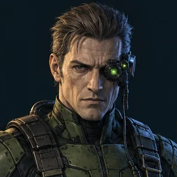

Dossier 01 · Nom de code provisoire
PARALLAXE
Il collecte les décisions que les contrats ne savent pas prévoir.

Univers originalStation Méridien · Opérateur Rook
Six scènes disponiblesTrois ouvertures · Trois conclusions
Combattant original jouableDuel IA, local et entraînement disponibles
Identité & intentions
Un avantage, jamais une certitude.
Le capteur et les limites
Concept de combattant
Duel IA, versus local et dojo disponibles. Les préparations sont interruptibles ; l’équilibrage reste initial.
| COMMANDE | ACTION | LIMITE |
|---|